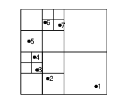
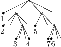

Heapsort is a general-purpose sorting algorithm, which is fast even in the worst case scenario. It exploits data arrangement and demonstrates that a good algorithm does not have to be straightforward. Suppose we need to order N real numbers. We start by taking three numbers and select the largest among them. We do the same with the next two numbers combined with one of the numbers at the bottom of the tree to produce a heap of numbers as illustrated in figure 12.1(a). If the upper number in any triplet is not the largest, it is swapped with the larger of the two numbers beneath it. At the end, the largest element is on top. The final arrangement of data is shown in the rightmost tree of figure 12.1(a).
The next stage of the algorithm starts with the largest element, on top, and replaces it with the largest element on the level below, which is in turn replaced with its largest element on the level below, and so on. In this way the largest element is pulled off first, then the second largest, third largest, and so on, and all numbers are eventually sorted according to their size; see figure 12.1(b).
(a)
Take N′ to be the smallest integer power of 2 larger than N. The number of levels in the heap is log 2N′. The first stage of the algorithm, building the heap, requires up to O(N log N′) = O(N log N) work. In the second stage, comparing and swapping is necessary up to N times for each level of the tree. Hence the algorithm is 2O(N log N), which is the same as O(N log N). Considering that merely going through N numbers is O(N) and that log N is usually a small number, sorting is “fast.”
A binary tree as in figure 12.2 can simply be stored as a one-dimensional array. The index in the array for the i-th element in the b-th level of the tree can be chosen as 2b-1 + i - 1.
Trees, which we have encountered in the heapsort algorithm, are a “data structure.” Arrays are another, simple data structure. A further possibility is to store pointers to data, that is, every data entry includes a reference to where the next entry is stored. Such a storage arrangement is called “list.” Inserting an element in a sequence of data is faster when the data are stored as a list rather than as an array. On the other hand, accessing the last element is faster in an array than in a list. Lists cause cache misses (described in chapter 8), because sequential elements are not stored sequentially in memory, in contrast to the cache’s locality assumption. A “hash table” is a data structure that can map a search term to an index for an array (an integer). A hash table uses a hash function to compute this index. It allows efficient lookup: given a string (e.g. the name of a chemical compound), find the corresponding value (e.g. a chemical formula).
Brainteaser: Sort one suit of a deck of cards with the heapsort algorithm. https://www.youtube.com/watch?v=WYII2Oau_VY
It is rarely possible to prove it takes at least a certain number of steps to solve a problem, no matter what algorithm one can come up with. Hence one can rarely avoid thinking “Isn’t there a faster way to do this?” (A famous example of this kind is multiplication of two N × N matrices in O(Nlog 27) steps, log 27 = 2.8..., which is less than O(N3). Unfortunately, the prefactor of the operation count for this asymptotically faster algorithm is impractically large.) The operation count of the fastest possible algorithm is called the “computational complexity” of the problem.
The number of necessary steps can increase very rapidly with problem size. Not only like a power as N3, but as N! or exp(N). These are computationally unfeasible problems, because even for moderate N they cannot be solved on any existing computer, e.g. 100! ≈ 10158; even 109 FLOPs a second cannot tackle this. A problem is called computationally “intractable” when the required number of steps to solve it increases faster than any power of N. For example, combinatorial problems can be intractable when it is necessary to try more or less all possible combinations.
A concrete example of an intractable problem is finding the longest common subsequence among several strings. A subsequence is the string with elements deleted. For example, ATG is a subsequence of CATAGC. The elements have the same order but do not have to be contiguous. This problem arises in spell checking and genome comparisons. (Genomes contain sequences of nucleotide bases and these bases are abbreviated with single letters.) Finding the longest common subsequence requires an algorithm which is exponential in the number of sequences; see figure 12.3.
AGTGGACTTTGACAGA
AGTGGACTTAGATTTA
TGGATCTTGACAGATT
AGTTGACTTACGTGCA
ATCGATCTATTCACCG
For some problems it has been proven that it is impossible to solve them in polynomial time; others are merely believed to be intractable since nobody has found a way to do them in polynomial time. (By the way, proving that finding the longest common subsequence, or any equivalent problem, cannot be solved in polynomial time is one of the major outstanding questions in present-day mathematics.) Since intractable problems do arise in practice, remedies have been looked for. For example, it might be possible to obtain a solution that is probably optimal in less time and the probability of error can be smaller than the chance that a cosmic ray particle hits the CPU and causes an error in the calculation.
The integral of certain functions cannot be obtained in closed form. For example, the integral of exp(-x2) cannot be expressed in terms of elementary functions, or at least not by a finite number of elementary functions. Yet, the integral is simply the Error function, a special function. Are special functions more difficult to evaluate numerically than elementary functions? Not profoundly. Either type of function can be expanded in a series that converges fast or approximated by some kind of interpolating function. A computer, and any online or pocket calculator for that matter, evaluates an elementary function, like sine, the same way. It uses an approximation algorithm, a rapidly converging series for instance. At the end, the hardware only adds, subtracts, multiplies, and divides. There is no fundamental definition of elementary function other than convention. Elementary functions are the ones frequently available on calculators and within programming languages. They are most likely to have ready-made, highly efficient implementations. Calculating an elementary function, a special function, or a function with no name at all to 16-digit precision is fundamentally the same kind of problem. For example, the Error function can be calculated to six digits of precision with only 23 floating point operations, with the following expression (from Abramovitz & Stegun, Handbook of Mathematical Functions):
Finite precision can reduce the computational complexity of a problem substantially. Actually the new C math library includes an erf function, which can be called the same way as sin.
The formula for the gravitational force of N objects on each other, Fi = mi ∑ j=1,j≠iNm j(ri -rj)∕(ri -rj)3 inevitably involves O(N2) operations. For example, the gravitational interaction of a 100 billion stars in a galaxy cannot be simulated with direct evaluation of all pairwise forces. If however the result is desired only to a certain precision, for example the roundoff precision, nearby objects can be grouped together to obtain the force they exert on all objects far away from them.
The tree based (Barnes-Hut) algorithm uses an adaptive grid that successively subdivides the domain until there is only one particle in each box (Fig. 12.4). The boxes are subdivided as particles are added. The grid is remade for every time step.
|  |  |
A convenient data structure for the adaptive grid is an (incomplete) quadtree in 2D or an octtree in 3D (Fig. 12.4). The children are ordered. The particles are at the leaves of the tree. Each node contains the total mass and center of mass coordinates for all the particles it contains.
If the ratio D∕r = (size of box) / (distance from particle to center of mass of box) is small enough, then the gravitational force due to all the particles in the box is approximated by their center of mass. To evaluate the forces, we start at the head of the tree and calculate the distance, and move down the tree, until the criterion D∕r < Θ is satisfied, where Θ is a user-supplied threshold.
If the particles are uniformly distributed, each body is about at the same level in the tree, and the depth of the tree is log 4N. The cost of adding a particle is proportional to the distance from the root to the leaf in which the particle resides. Hence, the complexity of inserting all the particles is O(N log N).
The operation count for the force evaluation can be determined by plotting all the boxes around an individual particle that satisfy the geometric criterion D∕r < Θ. Their size doubles with distance, and since there are at most 3 undivided squares at each level, the total amount of work is proportional to the depth in the tree at which particle is stored. Hence, this cost is also proportional to O(log N) for each particle. In total, the tree-based N-body method is an O(N log N) algorithm, at least when the bodies are distributed homogeneously.
□ Some interactive tools that visualize the Barnes-Hut algorithm: http://www.stefanom.org/wgc/test_tree.html?v=0, https://www.khanacademy.org/computer-programming/quadtree-hut-tree/1179074380
Recommended Reading: Cormen, Leiserson, Rivest & Stein, Introduction to Algorithms is a widely used textbook.